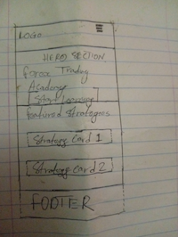
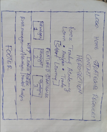

1. Site Name
Forex Trading Academy
The name "Forex Trading Academy" was selected because it clearly communicates the purpose of the website. The site is designed to help beginners and intermediate traders learn about forex trading, trading strategies, risk management, and market analysis.
Proposed domain: forextradingacademy.org
2. Site Purpose
Forex Trading Academy provides a simple educational hub for people who want to learn and improve their understanding of forex trading. The website provides information about trading strategies, risk management, market analysis, trading psychology, and other important forex concepts.
Visitors can explore different trading strategies, learn the basic concepts behind forex trading, and access useful educational resources to support their trading journey.
3. Target Audience
The primary audience is beginner and intermediate forex traders who want to develop their knowledge and become more disciplined in their approach to trading.
4. Scenarios
The following questions represent common questions that visitors to the website may have:
- What forex trading strategy is suitable for a beginner?
- How can I manage my risk when trading forex?
- What currency pairs can I trade?
- Where can I learn about candlestick patterns and market analysis?
5. Color Scheme
The color scheme uses dark blue and green to create a professional financial and educational appearance. Light backgrounds are used to keep the content easy to read.
Navy
#0A2540
Used for headers, navigation, headings, and dark sections.
Green
#16A34A
Used for buttons, links, accents, and positive indicators.
Light Gray
#F8FAFC
Used primarily for page backgrounds and supporting areas.
White
#FFFFFF
Used for cards, content areas, and text on dark backgrounds.
6. Typography
Poppins
Poppins will be used for headings, navigation, buttons, and major titles.
Inter
Inter will be used for body text, descriptions, forms, and other general content.
7. Wireframes
The wireframes show the planned layout of the Forex Trading Academy home page on both small and large screens. The wireframes focus on structure, content placement, navigation, and functionality before detailed styling is applied.
Small Viewport - Mobile

Large Viewport - Desktop
